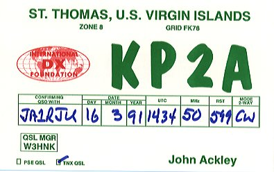

Flash ! DX


 
|
|
|
[Back Issues ! DX Report]
30.Apr.2025(15:00c)
-------------------------------------------------------------------------------------
[DX(FT8/=50.313/323MHz & FT4=50.318)=AF/Pacif/Asia/JA1...JS6-JA7/8/9/0]
(Open to China /Taiwan/Hong Kong/Rep of Korea)
+
05:24 FK8HA/+05=CQ 05:30 VK4WTN/-01 06:10 S60XX/-12 09:01 VK4KEE/-12
09:24 VK4FNQ/+00=CQ 09:51 VK6NH/+05=CQ ME
+
* Open to other station & area
+
08:37 3B9FR/JA2 09:57 HZ1DG/JA6
+
-------------------------------------------------------------------------------------
29.Apr.2025(15:00c)
-------------------------------------------------------------------------------------
[DX(FT8/=50.313/323MHz & FT4=50.318)=AF/Pacif/Asia/JA1...JS6-JA7/8/9/0]
(Open to China /Taiwan/Hong Kong/Rep of Korea)
+
05:14 XV9T/+03=CQ 05:23 FK8HA/+16=CQ 05:32 VK4TUX/+06 05:39 VK4SHG/+01=CQ
05:53 VK4NBP/-06 06:02 VK4ACZ/+01 06:15 VK4GU/+02 06:41 XW4KV/+06
06:59 3B9FR/-09 06:59 3B8FA/-24=CQ 07:06 VK4WTN/-18 07:12 FR4OO/-19=CQ
07:24 3D2AG/-19=CQ 07:42 VK6OX/-12=CQ 07:53 DV7GDL/-18 07:53 DV1XQX/+01=CQ
08:07 VK6NH/+01=CQ ME 08:37 VK4EKA/-19 08:39 VK6ZLX/+01 08:46 VK4FNQ/-05=CQ
08:46 VK4XA/-16
+
* Open to other station & area
+
-------------------------------------------------------------------------------------
28.Apr.2025(15:00c)
-------------------------------------------------------------------------------------
[DX(FT8/=50.313/323MHz & FT4=50.318)=AF/Pacif/Asia/JA1...JS6-JA7/8/9/0]
(Open to China /Taiwan/Hong Kong/Rep of Korea)
+
05:26 FK8HA/+01=CQ 06:09 VK6NH/-05=CQ ME 06:12 FK8CP/-11=CQ SEA 06:17 3B9FR/-05=CQ
07:21 VK6JJJ/MM/-17=CQ 07:27 DX9JP/-03=CQ 07:57 XV9T/+02=CQ 08:06 JI1FGX/DU9/+06=CQ
+
* Open to other station & area
+
07:56 FR4OO/JA2
+
-------------------------------------------------------------------------------------
27.Apr.2025(15:00c)
-------------------------------------------------------------------------------------
[DX(FT8/=50.313/323MHz & FT4=50.318)=Pacif/Asia/JA1...JS6-JA7/8/9/0]
(Open to China /Taiwan/Hong Kong/Rep of Korea)
+
05:01 FK8HA/+12=CQ 06:27 FK8CP/+04=CQ SEA 06:42 VK9DX/13=CQ 06:57 3D2AG/-10=CQ
07:01 VK4CZ/-03 07:06 VK4HJ/-10 07:07 VK4UV/-01 07:09 VK4WTN/-10
07:09 VK4KSY/-05 07:10 VK4DCM/-03 07:35 VK4NOW/-18 08:01 9V1XX/-08
08:07 VK6JJJ/MM/-18=CQ 08:47 DU7JAY/+02 08:51 DU4CR/-01 09:03 XV9R/+02=CQ EU
09:47 XW4KV/+02
+
* Open to other station & area
+
-------------------------------------------------------------------------------------
26.Apr.2025(15:00c)
-------------------------------------------------------------------------------------
[DX(FT8/=50.313/323MHz & FT4=50.318)=AF/Pacif/Asia/JA1...JS6-JA7/8/9/0]
(Open to China /Taiwan/Hong Kong/Rep of Korea)
+
03:01 VK4WTN/-14 03:26 VK6NH/-04=CQ AF 03:26 VK4FJ/-16=CQ 03:44 VK6OX/-24=CQ
03:50 FK8CP/+01=CQ SEA 03:59 VK4EKA/-13=CQ 04:10 FK8HA/+11=CQ 04:14 VK4SM/+00=CQ
06:45 VK4MA/-04 06:46 VK4KSY/-01 06:57 3B9FR/-01=CQ 07:00 VK4DCM/-052
07:07 3D2AG/-03=CQ 07:10 VK6ZLX/+01=CQ 07:12 VK4ZPU/-07 07:14 VK4GJW/-21
07:15 VK4CZ/-01 07:19 VK9DX/-14=CQ 07:30 VK4TUX/-15 07:31 VK4HJ/-03
07:39 9V1XX/-19 07:51 3B8FA/-11=CQ 07:57 VK4KEE/-05 08:04 FK8HM/-08=CQ
08:31 VK4EKA/-05 08:42 VK4QG/+02 08:42 VK4FNQ/-17 08:52 VK4XA/+01
09:03 YB1HR/+04 09:11 JI1FGX/DU9/-15=CQ 09:21 YB2MDU/-17=CQ 09:28 YB1MIG/-10=CQ
09:52 YC2KME/-04
+
* Open to other station & area
+
10:44 A92GE/JA6 10:56 4X4DK/JA5
+
-------------------------------------------------------------------------------------
25.Apr.2025(15:00c)
-------------------------------------------------------------------------------------
[DX(FT8/=50.313/323MHz & FT4=50.318)=AF/Pacif/Asia/JA1...JS6-JA7/8/9/0]
(Open to China /Taiwan/Hong Kong/Rep of Korea)
+
03:27 FK8CP/-09=CQ SEA 03:47 AX6OX/-09 03:49 AX6TEK/-05 03:51 AX6EMU/-18
03:52 VK6ZFG/+01 04:01 VK6DS/-23 04:08 AX3OTR/-05=CQ 04:15 VK3HY/-07
04:17 VK3BY/-13 04:17 AX3ART/-20 04:26 VK6RO/-02=CQ 04:31 AX7ZTA/-13=CQ
04:33 VK3DUT/-14 04:35 VK3ZVE/-19 04:56 VK3FS/-15=CQ 04:56 VK3BDL/-06=CQ
05:00 VK3ACR/-09 05:03 VK5AYD/-04=CQ 05:26 XV9T/+04=CQ 05:32 VK3GK/-11=CQ
05:34 ZL1AKW/-11=CQ 05:36 VK2FAB/-25=CQ 05:42 XW4KV/+06 06:01 VK6NH/+05=CQ AF
06:10 VK6CPU/-12=CQ 06:16 DX9JP/-16 06:19 DU1/W1JET/-17 06:27 VK6ZLX/+00
07:02 FK8HA/-08=CQ 07:13 VK6GC/-13 07:15 VK6IQ/-18 07:21 3B8FA/-12
07:28 3B9FR/-05 07:29 VK9KXW/-02=CQ 07:47 DU1EQ/+00 07:50 DU6/PE1NSQ/+03
08:21 VK6ZM/-14 08:21 VK6ZKO/-16 08:27 AX4FNQ/-21 08:29 KH0/KC0W/-19=CQ
08:32 9V1XX/-18=CQ 08:39 JI1FGX/DU9/+01=CQ 08:39 VK4TUX/-02 08:39 VK4WTN/-06=CQ
08:39 AX4DCM/-17
+
* Open to other station & area
+
07:23 UK8AEA/JA1
+
-------------------------------------------------------------------------------------
24.Apr.2025(15:00c)
-------------------------------------------------------------------------------------
[DX(FT8/=50.313/323MHz & FT4=50.318)=AF/Pacif/Asia/JA1...JS6-JA7/8/9/0]
(Open to China /Taiwan/Hong Kong/Rep of Korea)
+
03:18 FK8CP/+04=CQ SEA 03:32 VK4WTN/-16=CQ 03:48 VK4KSY/-20 04:06 VK4FJ/-14=CQ
04:23 R96XTL/-24=CQ 04:39 FK8HA/+05=CQ 04:42 VK4MA/-02 05:57 3D2AG/-22=CQ
06:03 XW4KV/+01=CQ 06:12 VK6ZLX/+01=CQ 07:00 VK4GU/-21 07:13 XV9T/+03=CQ
07:24 3B9FR/+04=CQ 07:45 VK4XA/-14 08:05 VK6NH/-04=CQ 08:28 VK4FNQ/-20
09:21 VK2TRD/-10
+
* Open to other station & area
+
09:14 5W1SA/JA1
+
-------------------------------------------------------------------------------------
23.Apr.2025(15:00c)
-------------------------------------------------------------------------------------
[DX(FT8/=50.313/323MHz & FT4=50.318)=AF/Pacif/Asia/JA1...JS6-JA7/8/9/0]
(Open to China /Taiwan/Hong Kong/Rep of Korea)
+
02:31 FK8CP/+02=CQ SEA 02:49 VK4CAG/+04=CQ 03:11 VK4KSY/+02 03:18 VK4UH/+05
03:22 FK8HA/+12=CQ 03:37 VK4WTN/-02 04:28 ZL1AKW/-06=CQ 06:00 XW4KV/-02=CQ
06:12 VK6ZLX/-02=CQ 07:07 3D2AG/-19 07:17 VK4XA/-16 08:32 VK4FNQ/-16=CQ
08:48 VK4LV/+03=CQ 08:56 VK4KEE/-04=CQ 09:11 DX9JP/-02 09:11 VK4TMT/-19
+
* Open to other station & area
+
08:55 3B9FR/JA2 09:12 UK8OM/JA4 09:07 HS0ZKB/JA4
+
-------------------------------------------------------------------------------------
22.Apr.2025(15:00d)
-------------------------------------------------------------------------------------
[DX(FT8/=50.313/323MHz & FT4=50.318)=AF/Pacif/Asia/JA1...JS6-JA7/8/9/0]
(Open to China /Taiwan/Hong Kong/Rep of Korea)
+
01:47 FK8CP/-02=CQ SEA 02:16 VK4LV/-04 02:32 VK4HJ/+02 02:40 VK4WTN/+03=CQ
02:40 VK4GU/+01 03:21 VK4FJ/-18 03:27 ZL1AKW/-22=CQ 03:28 VK4SIX/-01
03:33 VK4EW/-07 03:37 VK4WDM/-10 03:46 DU9/W1JET/-05 03:48 DU9JP/-07
03:59 VK5ST/-18 04:05 VK5JR/-13 04:06 VK6IR/-23=CQ 04:11 VK2JDS/-17
04:33 VK5XDX/-07 04:35 VK3DUT/+00 04:40 VK3OTR/-06=CQ 04:53 VK3BDL/-16
04:58 VK4ZTG/+01 05:02 VK4KSY/-12 05:20 FK8HA/+08=CQ 05:33 VK5BC/-26=CQ
05:33 VK3FS/-20=CQ 06:08 VK4EKA/-12 06:09 3D2AG/+01=CQ 06:42 XV9T/+03=CQ
06:52 JI1FGX/DU9/+02=CQ 06:56 DU9JP/-11=CQ 07:02 T88UW/+06 07:30 VK9DX/+04=CQ
07:33 VK4MA/-05 07:42 DU3LA/-18 08:02 H44MS/-07-CQ 08:18 VK8DR/-17=CQ
08:19 VK4FNQ/-02=CQ 08:36 3B8FA/-20 08:37 3B9FR/-06 08:51 DU1/NF0O/-16
08:52 A62A/-24=CQ 09:05 4F3AC/-06 09:17 7Z1SJ/-15=CQ 09:27 VK4XA/-04
09:38 VK4KEE/-13
+
* Open to other station & area
+
03:42 V73KW/JA2-6 09:34 A71AT/JA1-2- 09:47 A71YY/JA1-
+
-------------------------------------------------------------------------------------
[DX(FT8=50.313/323MHz & Q65=50.275MHz) Report from Kochi(PM63)= TNX JA5FFJ]
-------------------------------------------------------------------------------------
0655 UK8OM/-15 0837 3B9FR/-12 1028 VU2NKS/-23 1111 9K2GS/-12
1111 A92GE/-15 1119 3B8FA/-20 1122 9J2FI/-17 1142 HZ1DG/-05
-------------------------------------------------------------------------------------
21.Apr.2025(15:00c)
-------------------------------------------------------------------------------------
[DX(FT8/=50.313/323MHz & FT4=50.318)=AF/Pacif/Asia/JA1...JS6-JA7/8/9/0]
(Open to China /Taiwan/Hong Kong/Rep of Korea)
+
02:10 3D2AG/+01=CQ 03:13 FK8CP/-19=CQ SEA 03:18 VK4KSY/-07 05:28 XW4KV/+01
05:43 VK9DX/-19=CQ 06:21 VK6ZLX/+01=CQ 07:02 VK6AKT/+00 07:14 VK5PJ/-08
07:19 VK6NH/+02=CQ AF 07:25 VK6ZKO/-01 07:28 VK5AKK/-19 07:29 XV9T/+04
07:36 VK6IR/-08=CQ 07:40 VK6GC/-19 07:40 VK6RO/-13=CQ 07:42 DU9JP/-02=CQ
08:03 FK8HA/-03=CQ 08:05 FK4UJ/-11 08:26 DV1XQX/+05 08:26 VK4GU/-08
08:27 VK4ZTG/-05 08:27 VK9FR/-11 08:27 3B9FR/+01 08:30 VK4XA/-01
08:30 VK4LV/-18=CQ 08:32 VK4FNQ/-03=CQ 08:36 VK4WTN/-09=CQ 08:47 DU1/NF0O/+09
08:50 T88UW/-08 09:03 4F3AC/+01=CQ
+
* Open to other station & area
+
05:57 FR4OO/JA6
+
-------------------------------------------------------------------------------------
20.Apr.2025(15:00c)
-------------------------------------------------------------------------------------
[DX(FT8/=50.313/323MHz & FT4=50.318)=Pacif/Asia/JA1...JS6-JA7/8/9/0]
(Open to China /Taiwan/Hong Kong/Rep of Korea)
+
01:46 FK8CP/+00=CQ 03:06 ZL1AKW/-06=CQ 03:12 VK2XN/-14 03:14 VK4TUX/+02
03:18 VK4CZ/+01 03:30 VK3OTR/-15 03:30 VK4HJ/+00 03:30 VK4WTN/+00
03:31 VK4KEE/+02 03:42 VK4ACZ/+03 03:42 VK4AFU/-02=CQ 03:46 VK4KSY/-01
03:50 VK4WDM/+05=CQ 04:11 VK3DUT/-11 04:14 VK5HS/-17 04:18 VK4LV/+05=CQ
04:19 VK3BD/-12=CQ 04:25 VK4NBP/-02 04:29 VK5RM/-11=CQ 04:37 VK1AX/-14
04:39 VK5ST/-10 04:43 VK3NF/P/-19 04:43 VK6QM/-19=CQ 04:43 VK5GR/-09
04:46 VK4RF/-06 04:50 VK2LAW/-16=CQ 04:49 VK2EX/-15 04:58 VK5AYD/-03=CQ
05:02 VK6IR/-05=CQ 05:02 VK2ZZY/-16=CQ 05:03 VK4KM/-19=CQ 05:05 VK2IE/-11
05:06 VK2ZPN/-11 05:06 VK3MH/-08 05:06 VK3ACR/-13 05:08 VK5GF/-06
05:15 VK9DX/+01 05:20 VK3BDL/-21=CQ 05:37 VK4EW/-05 05:38 VK2XAX/-18=CQ
05:38 VK4SE/-20 05:40 VK2EJW/-20 05:40 VK6HV/-17 05:47 FK4UJ/+00
05:48 VK6RO/-18 05:48 VK5LO/-20=CQ 06:04 VK5KJ/-11 06:06 VK5ZTS/-12
06:08 VK4NE/-16 06:10 VK5SAM/-19=CQ 06:10 VK5WU/-22 06:12 VK4MJF/-16
06:14 VK6DS/-19 06:15 VK2AMT/-01 06:17 VK5BN/-14 06:18 VK1DO/-15
06:19 FK8HA/+06=CQ 06:22 YC2KME/-08 06:22 3D2AG/-10=CQ 06:25 VK6CPU/-11
07:43 VK6KC/-08 07:43 VK6ZLX/-04 07:44 DX9JP/-08 07:48 VK4MA/-10
07:53 XV9B/-15 08:00 JI1FGX/DU9/+02 08:10 VK6KXW/+02=CQ 08:24 VK6OX/+02=CQ EU
08:44 VK6XT/-07 08:51 DV1XQX/+03 08:57 DU1/NF0O/-08
+
* Open to other station & area
+
07:27 3B9FR/JA5
+
-------------------------------------------------------------------------------------
19.Apr.2025(15:00c)
-------------------------------------------------------------------------------------
[DX(FT8/=50.313/323MHz & FT4=50.318)=AF/EU/Pacif/Asia/JA1...JS6-JA7/8/9/0]
(Open to China /Taiwan/Hong Kong/Rep of Korea)
+
04:10 VK4KSY/-06 04:25 3D2AG/+01=CQ 04:47 FK8HA/+04=CQ 04:56 FK8CP/+02=CQ
05:00 VK5ST/-16=CQ 05:02 VK5XDX/-17 05:15 VK4AFU/-19 05:24 VK4WDM/-20
05:24 VK4GU/-19 05:30 VK6IR/-20 05:37 VK4CAG/-14 05:43 VK5GF/-15
05:52 VK6NH/-11 05:55 VK3OTR/-22 06:06 VK4MA/-09 06:07 VK4TUX/-12
06:19 VK4ZTG/-11 06:20 VK5AYD/-10 06:24 VK5UW/-14 06:24 VK5WU/-03
06:37 XW4KV/+04 06:51 VK4UH/-14 09:23 VK4FNQ/-17 09:24 DU1/NF0O/-02
09:24 DU4CR/-01 09:31 VK4WTN/-19 09:35 VK6TM/-11=CQ 09:40 DV2RXB/-11
09:49 XV9B/-05=CQ 09:57 DV3EZ/+00=CQ 10:17 3B9FR/-13 10:47 A92GE/-23=CQ
10:63 4X4DK/-21=CQ 11:00 VK6ZLX/-18=CQ 11:12 VK6JJJ/MM/-16=CQ
+
* Open to other station & area
+
10:55 9J2FI/JA1-6
+
-------------------------------------------------------------------------------------
18.Apr.2025(15:00c)
-------------------------------------------------------------------------------------
[DX(FT8/=50.313/323MHz & FT4=50.318)=CA/Pacif/Asia/JA1...JS6-JA7/8/9/0]
(Open to China /Taiwan/Hong Kong/Rep of Korea)
+
00:55 3D2AG/-14=CQ 01:23 XE1MEX/-16=CQ 01:35 4A100IARU-14 02:18 VK4RF/-06=CQ
02:18 VK5PO/-07 02:18 VK5UR/-13 02:19 VK3BDX/-11 02:19 VK5JR/-10
02:20 VK3OP/-18 02:20 VK3UBU/-20 02:21 VK3ACR/-06 02:22 VK5KJ/-08
02:33 VK4ACZ/+03=CQ 02:49 VK5HS/-20 02:53 VK5GF/-20=CQ 02:53 VK4GJW/-19=CQ
02:57 FK8CP/+05=CQ SEA 02:57 VK4ZQ/-05 02:57 VK2BIT/-21=CQ 03:03 VK2XAX/-06=CQ
03:11 VK2AZ/-18=CQ 03:14 VK4WTN/-01 03:15 VK2LAW/-11=CQ 03:17 ZL1AKW/+03=CQ
03:22 VK4DX/-11 03:26 VK2ABM/-20 03:27 VK4NOW/-11 03:38 E51WL/-24
03:39 VK4OO/-07=CQ 03:42 VK6NH/-21=CQ 03:50 VK4KSY/+00 04:01 VK4AFU/-08=CQ
04:04 VK4SIX/+05 04:04 VK2EX/-13=CQ 04:09 VK4EKA/-16 04:10 ZL1RS/-09
04:10 FK4UJ/-18=CQ 04:10 VK4ZTG/-07 04:14 VK4AFU/-11(FT4) 04:15 VK4CZ/+00
04:36 VK9DX/+06 04:53 FK8HA/+06=CQ 04:56 VK4MA/+07 05:05 VK4TUX/+05
05:16 9V1XX/-12 05:19 VK4JAO/-02 05:48 9V1YC/-20 06:10 9M2DA/-16
06:11 VK3DUT/-17 06:16 VK4SM/-14 06:17 DX9JP/-06 06:35 YB5QZ/+03
07:21 VK6DU/-08=CQ 07:23 VK4ALX/+00 07:29 VK6APK/+02 07:35 VK6SP/-04
07:36 KG6JDX/-01=CQ 07:36 VK6IQ/-18 07:39 VK6OX/+03 08:03 DU1/NF0O/+03
08:03 VK4FJ/+03 08:08 VK4HID/-09 08:10 DV2RXB/+02 08:29 DV1XQX/-10=CQ
08:30 VK4FNQ/-01 08:30 VK4NBP/-12 08:30 YB2MDU/-12 08:33 XW4KV/+02
08:48 VK4DCM/-11 08:52 DU3LA/-04=CQ 09:04 JI1FGX/DU9/+06=CQ 09:07 YB1WCK/-04
09:07 YB1UUN/-05 09:08 YB1BML/-15 09:19 VK4WDM/-14=CQ 09:26 YB0BAC/-07
+
* Open to other station & area
+
01:24 XE2YWH/JA1
+
-------------------------------------------------------------------------------------
17.Apr.2025(15:00c)
-------------------------------------------------------------------------------------
[DX(FT8/=50.313/323MHz & FT4=50.318)=SA/Pacif/Asia/JA1...JS6-JA7/8/9/0]
(Open to China /Taiwan/Hong Kong/Rep of Korea)
+
00:49 VK9DX/+05 01:36 FK8CP/+10=CQ SEA 02:02 XW4KV/+05 02:06 VK4MA/+02
02:10 ZL1AKW/-12 02:16 VK4CAG/+01 02:16 VK5JR/-18 02:18 NH6Y/-14
02:36 VK3OTR/-14 02:37 VK4TUX/+02 02:41 VK2LAW/-20 02:47 VK5PO/-14
02:51 VK5XDX/-07 02:52 VK5AKK/-19 02:53 VK5PJ/-21 02:54 VK4GJW/-02
02:56 3D2AG/-07 02:58 VK4HJ/+04 02:58 VK6NH/-19=CQ 03:03 VK3ZL/-11
03:09 VK6AKT/-06 03:10 VK6OX/-01=CQ 03:11 VK6RO/-12 03:13 FK8HA/+06
03:24 VK3BDL/-19 03:28 VK4AFU/-13 03:30 VK3DUT/-18 03:35 VK4UH/+03
03:37 VK2ZPN/-19 03:39 4F1OZ/-02=CQ 03:47 4F3AC/-19=CQ 03:48 VK4KSY/-18
03:54 DV1XQX/-08 03:59 DU3AW/+05 04:05 VK4WTN/-08 04:11 VK4DDM/-17
04:36 VK5AYD/-22 04:39 DU1VGX/-15 04:52 VK4XA/+02 04:52 VK4QG/-03
05:12 FK4UJ/+03=CQ 07:30 XU7O/-02 08:03 DV2RXB/-03 08:08 KH0/KC0W/+05=CQ
08:20 DX9JP/9/-19 08:21 VK6ZLX/+01=CQ 08:32 VK6TM/-02 08:37 VK4FNQ/-14=CQ
08:42 DU1/NF0O 08:43 KG6JDX/-10 08:47 VK4EM/-03=CQ 09:15 4F3OM/+02
10:18 H44MS/-13 10:37 9K2GS/-14 10:37 VK8TH/-17 10:41 VK6JJJ/MM/-14
11:36 9N7AA/-15=CQ 11:46 VK8DR/-14=CQ 11:59 VK8JM/-13 12:00 T88UM/-18
12:01 VK8NSB/-16 12:09 VK4KEE/-10=CQ 12:09 YB3EDD/-17=CQ 12:12 VK8TH/-13
13:02 YB2MDU/-19 13:14 YF3DZU/-15=CQ
+
* Open to other station & area
+
09:03 EY7AD/JA6 11:28 7Z1SJ/JA5 17:21 PR7XB/JA6
+
-------------------------------------------------------------------------------------
16.Apr.2025(15:00c)
-------------------------------------------------------------------------------------
[DX(FT8/=50.313/323MHz & FT4=50.318)=Pacif/Asia/JA1...JS6-JA7/8/9/0]
(Open to China /Taiwan/Hong Kong/Rep of Korea)
+
06:57 DX9JP/+01=QSO 06:57 VK6ZLX/-03=CQ 06:58 S60XX/-18 07:02 XU7O/+05=QSO
07:04 XV9T/+06 07:40 VK3HY/-08 07:56 3D2AG/-07 08:00 9M2DA/-09=CQ
08:13 JI1FGX/DU9/+04=CQ 09:47 VK4FNQ/-09
+
* Open to other station & area
+
-------------------------------------------------------------------------------------
15.Apr.2025(15:00c)
-------------------------------------------------------------------------------------
[DX(FT8/=50.313/323MHz & FT4=50.318)=AF/CA/Pacif/Asia/JA1...JS6-JA7/8/9/0]
(Open to China /Taiwan/Hong Kong/Rep of Korea)
+
03:26 ZL1AKW/-01 03:31 VK4KSY/-15 04:30 VK4ZFG/-17=CQ 04:32 VK6NH/-07
06:23 XW4KV/-11=CQ 06:52 VK6OX/-09=CQ 07:12 VK6YI/-12 07:36 XV9T/+04=CQ
07:38 VK6ZLX/-03=CQ 07:40 3D2AG/+00=CQ 08:04 FK8CP/-16=CQ 08:08 JI1FGX/DU9/+04=CQ
09:03 VK4FNQ/-01=CQ 09:13 VK4KEE/-02
+
* Open to other station & area
+
02:24 TX5XG/JA1
+
-------------------------------------------------------------------------------------
14.Apr.2025(15:00c)
-------------------------------------------------------------------------------------
[DX(FT8/=50.313/323MHz & FT4=50.318)=AF/CA/Pacif/Asia/JA1...JS6-JA7/8/9/0]
(Open to China /Taiwan/Hong Kong/Rep of Korea)
+
02:29 FK8CP/+02=CQ SEA 02:58 VK4CZ/-02 03:14 VK4KSY/-05 03:18 VK4XA/-15
03:51 VK4TW/-10 03:33 ZL1AKW/-22=CQ 03:34 VK4AFU/-21 03:53 VK4WDM/-15
04:06 FK8HA/+02 04:13 VK9DX/-04=CQ 04:52 VK2IR/-19 04:52 VK3BDL/-19=CQ
05:02 VK4EW/-02 05:10 VK6OX/-19 05:26 VK6DON/-18 05:37 VK6IR/-22=CQ
05:39 VK6ZFG/-01 05:41 VK6RO/-17=CQ 06:24 VK8JM/-12 06:38 VK6ADI/-08
06:39 3D2AG/-06=CQ 06:42 VK6JKP/-16 07:02 VK6DU/-20=CQ 07:10 VK6ZLX/+00=CQ
07:17 VK6KC/-02 07:28 VK6ZM/-06=CQ 07:38 VK8NSB/-15=CQ 07:39 VK6YI/-13=CQ
07:47 VK4MA/-19=CQ BY 07:53 JD1BOI/-21=CQ 08:18 DU1/NF0O/+02 08:22 UK8OM/-14=CQ
08:22 9N7AA/-01=CQ 08:29 KH0/KC0W/-08 08:46 VK4FNQ/-16=CQ 09:06 4F3AC/-04=CQ
+
* Open to other station & area
+
23:29 LU9FVS/JA1 02:00 CX5FTL/JA1 02:05 CA3CNN/R/JA1
+
-------------------------------------------------------------------------------------
13.Apr.2025(15:00c)
-------------------------------------------------------------------------------------
[DX(FT8/=50.313/323MHz & FT4=50.318)=AF/CA/Pacif/Asia/JA1...JS6-JA7/8/9/0]
(Open to China /Taiwan/Hong Kong/Rep of Korea)
+
01:50 FK8CP/+05=CQ SEA 01:55 KH6HI/-07=CQ 01:59 KH6U/-04=CQ 02:09 VK5PJ/-16=CQ
02:11 VK5AYD/08 02:12 VK5BC/-12 02:12 VK5KJ/-18 02:12 VK5RM/-19
02:20 VK3OTR/-11 02:22 VK4TUX/-16(FT4) 02:24 NH6D/-20 02:26 VK6OX/-07
02:36 VK4MA/+01 02:49 FK8HA/+08=CQ 02:54 VK9DX/-05=CQ 02:59 VK1DO/-18
03:04 VK9DX/+03=QSY(CW) 03:15 VK7EA/-14 03:15 VK7ZOT/-19 03:17 VK7ZTA/-15
03:26 VK4TUX/-15 03:26 VK4GHZ/-12 03:28 VK4HJ/-15 03:29 KH6LEO/-20
03:29 VK4WTN/-13 03:46 VK4SM/-19 03:48 H44MS/-16 04:12 VK4UH/-07
04:16 FK8HM/+03=CQ 04:23 VK2LAW/-24=CQ 04:23 VK6NH/-16=CQ 04:29 VK4CZ/-10
04:37 VK6RO/-08=CQ 04:37 VK6ADI/-05=CQ 04:43 VK4ZPU/-06 04:50 VK6ZE/-15
04:51 VK6HV/-15 04:52 3D2AG/-05=CQ 04:58 VK1DJA/-13=CQ 05:09 VK6DW/-22=CQ
05:14 VK3FZ/-18 05:15 VK5JR/+00 05:16 VK4AFU/-13 05:20 VK5GF/+05
05:21 VK5ATH/-18=CQ 05:22 VK5UW/+03 05:25 VK5WU/-16 05:26 VK5ALG/-09
05:39 VK3DEN/-19 05:40 VK3MH/-16 05:41 VK5ST/-12 05:45 VK5DR/-22=CQ
05:46 VK6TM/-07=CQ EU 05:54 VK5XDX/-03 05:57 VK3KTT/-20=CQ 06:09 VK3FS/-17
06:10 VK3ZL/-08 06:15 VK3BY/-09 06:35 VK6WX/-18 06:38 VK6SP/-22
06:47 VK6PR/-16 07:00 VK6QM/-16 07:06 9V1YC/-08=CQ 07:27 XV9T/+03=CQ
07:28 VK6ZLX/-03 07:39 VK6IR/-10=CQ EU 07:42 9M6NA/-06=CQ 08:01 DU9/W1JET/-01
08:03 9V1XX/-18=CQ 08:30 DV1IIW/-03=CQ
+
* Open to other station & area
+
00:49 XE1AO/JA7
+
-------------------------------------------------------------------------------------
12.Apr.2025(15:00c)
-------------------------------------------------------------------------------------
[DX(FT8/=50.313/323MHz & FT4=50.318)=AF/Pacif/Asia/JA1...JS6-JA7/8/9/0]
(Open to China /Taiwan/Hong Kong/Rep of Korea)
+
01:23 JD1BON/-15=CQ 02:11 FK8CP/+02=CQ SEA 02:25 KH6U/-13=CQ 03:18 VK4CZ/-04
03:40 FK8HA/+22=CQ 03:42 VK9DX/+03=CQ 04:17 VK5HS/+00 04:19 VK5AYD/-20=CQ
04:20 VK5BC/-14 04:24 VK5RM/-14=CQ 04:28 VK3HY/-18 04:28 ZL3AAU/-17
04:34 VK5XDX/-13 04:40 VK2BLS/-13 04:42 VK5BD/-20 04:44 VK1DJA/-15=CQ
05:00 VK2JDS/-14 05:00 VK5KG/-22 05:01 VK4JAO/-14 05:13 ZL3AIC/-19
05:50 VK4WTN/-08=CQ 05:52 ZL3RC/-14 05:57 VK4KX/-16 06:02 VK4XA/-11
06:13 4I1BNC/+04=CQ 06:18 VK4SIX/-16 06:32 DV1ROY/+03 06:48 VK4FNQ/-11
06:58 VK4MA/-18=CQ BY 07:05 YB5QZ/-12=CQ 07:18 EY8MM/-24=CQ 07:27 9M6NA/+01=CQ
07:31 3D2AG/+01=CQ
+
* Open to other station & area
+
04:49 9V1XX/JA5 07:12 UK8AEA/JA1 07:40 FR4OO/JA2 09:01 9K2WA/JA3
+
-------------------------------------------------------------------------------------
11.Apr.2025(15:00b)
-------------------------------------------------------------------------------------
[DX(FT8/=50.313/323MHz & FT4=50.318)=AF/Pacif/Asia/JA1...JS6-JA7/8/9/0]
(Open to China /Taiwan/Hong Kong/Rep of Korea)
+
02:04 JD1BOI/--15=CQ 02:45 ZL1RS/-06=CQ 02:49 ZL1HD/-12 02:49 FK8HA/-01=CQ
02:50 FK8CP/-01=CQ SEA 03:08 VK4GJW/-17CQ 03:19 ZL2WHO/-09=CQ 03:27 VK4WDM/-11
03:30 KH6PE/-14 03:48 VK4KSY/-09 04:16 ZL1HD/-13 04:24 VK9DX/-04
04:31 VK5AYD/-20 04:59 VK3HY/-18 05:25 VK5JR/-07 05:28 VK6OX/+02
05:35 YB5QZ/-16 05:38 FK4UJ-03=CQ 05:38 VK6ZFG/-08=CQ 05:57 9M6NA/-04=CQ
06:04 VK6CPU/+02=CQ EU 06:10 VK6ZE/-04 06:19 VK4MA/-13=CQ UN 06:21 XW4KV/+04
06:23 VK6YI/-10 06:27 VK6XT/-15=CQ 06:33 VK4CAG/-16 07:00 VK6NH/-16=CQ EU
07:35 XV9T/+10=CQ 07:58 3D2AG/-02=CQ
--------- 08:23 >>Thunder Storm QRT <<--------
+
* Open to other station & area
+
02:06 XE2YWH/JA1 07:35 UN3GX/JA5 07:50 7Z1SJ/JA6 07:50 EX8MLE/JA6
07:51 FR4OO/JA5
+
-------------------------------------------------------------------------------------
10.Apr.2025(15:00c)
-------------------------------------------------------------------------------------
[DX(FT8/=50.313/323MHz & FT4=50.318)=SA/EU/AF/Pacif/Asia/JA1...JS6-JA7/8/9/0]
(Open to China /Taiwan/Hong Kong/Rep of Korea)
+
00:59 FK8CP/+06=CQ AF 02:12 VK9DX/+09=CQ 02:44 AH7C/-04 02:51 VK4NBP/-06=CQ
02:58 VK4MA/+11=CQ BY 03:12 VK2EMA/-04 03:12 ZL3TE/-20=CQ 03:12 FK8HA/+16=CQ
03:16 VK5PJ/-17=CQ 03:17 VK5KG/-21 03:18 VK3OT/-08 03:70 VK3JA/-13
03:21 VK4GHZ/-02 03:21 VK4WTN/+04=CQ BY 03:21 VK5BC/-16 03:32 VK4LV/-07
03:38 VK4RF/-11 03:39 VK4EKA/-15 03:40 ZL40MVL/-17 03:41 VK2XAX/-09=CQ
03:42 ZL1WHS/-16 03:42 FK8GX/-04 03:47 VK2VRJ/-17 03:47 VK2IE/-16
03:56 VK4DHL/-18 04:01 VK4GJW/-17=CQ 04:01 VK4TW/-11 04:02 VK2AMT/-14=CQ
04:13 VK5XDX/-11 04:13 KH6HI/-10=CQ 04:15 VK3OER/-16=CQ 04:16 VK1DJA/-17
04:16 VK2MBK/-12 04:18 VK4CAG/+03 04:18 ZL1RS/-01 04:18 9M6NA/-10
04:20 NH6Y/-10=CQ 04:23 DU6/PE1NSQ/+05 04:24 VK4ACZ/+00=CQ 04:26 KH6P/-18
04:29 VK5KJ/-19 04:39 KH6U/-12 04:42 JD1BOI/-07 04:43 ZL1AKW/+04=CQ
04:45 VK2AAI/-11 04:45 3D2AG/-16 04:48 KH7EH/-20=CQ 04:50 VK4EW/-01=CQ
05:26 VK3BDL/-01 05:26 VK1KW/-11 05:28 DV1ROY/-05 05:26 VK1RD/-19
05:27 VK3GL/-14 05:27 VK4ZP/+04 05:27 VK3ZVE/-06 05:27 VK2JEH/-18
05:27 VK7ZTA/-14 05:27 VK3DDU/-09 05:28 VK3AFM/-06=CQ 05:28 VK3FS/-08
05:28 VK7ACE/-11=CQ 05:30 VK5WU/-15=CQ 05:30 DU1EQ/+04=CQ ...Good Open to VK's
06:00 JI1FGX/DU9/+01 06:24 KH0/KC0W/-12 07:19 9N7AA/-09=CQ 07:35 DV2RXB/-04
07:39 DV3EZ/-03 08:09 DU1/NF0O/+06 09:05 DV1XQX/+04
+
* Open to other station & area
+
07:43 FR4OO/JA4
+
-------------------------------------------------------------------------------------
09.Apr.2025(15:00d)
-------------------------------------------------------------------------------------
[DX(FT8/=50.313/323MHz & FT4=50.318)=SA/EU/AF/Pacif/Asia/JA1...JS6-JA7/8/9/0]
(Open to China /Taiwan/Hong Kong/Rep of Korea)
+
01:37 3D2AG/-04=CQ 03:45 XV9B/-01=CQ 04:01 FK8HA/-11=CQ 04:15 VK4GHZ/-09
04:26 VK3HY/-07 04:27 VK2ON/-17=CQ 04:28 VK4WTN/-16 04:36 ZL2WHO/-10
04:36 VK3DUT/-04 04:43 VK4TMT/-21=CQ 04:46 VK4LV/-17=CQ 05:02 VK6DW/-20
05:03 VK4AK/-03 05:04 VK4JAO/-12=CQ 05:11 ZL1SWW/-10 05:13 ZL1RS/-04
05:14 FK8CP/-17=CQ 05:36 9M6NA/-07 05:46 VK5AKK/-15=CQ 05:55 VK6IR/-10
06:03 XV9T/-01=CQ 06:16 VK6RO/-17 06:18 VK6DF/-17 06:40 4E1FKB/+01=CQ
07:02 9N7AA/-06=CQ 07:03 JD1BOI/-17 07:06 YB1UUN/-16 07:26 XW4KV/-03=CQ
08:00 FR4OO/-12 08:34 VK4FNQ/-14 08:42 VK6NH/-01 08:46 UK8OM/-17=CQ
08:49 ZL1AKW/+03
+
* Open to other station & area
+
08:34 VU2CPL/JA6 09:00 4X6ZK/JA6
+
-------------------------------------------------------------------------------------
[DX(FT8=50.313/323MHz & Q65=50.275MHz) Report from Kochi(PM63)= TNX JA5FFJ]
-------------------------------------------------------------------------------------
0204 PY2XB/-22 0205 PY5EK/-24 0205 PY2JA/-21 0213 PY5CC/-18
0326 CE2SV/-23 0658 9N7AA/-14 0919 4X6ZK/-12 0920 4Z5LA/-20
0920 SV5DKL/-20 0927 4Z1TL/-18 1000 ZS1LS/6/-16 1004 4X4DK/-17
1009 9J2FI/-17 1020 3B8HK/-16 1041 VU2CPL/-11 1052 9K2OD/-20
1057 ZS6P/-16
-------------------------------------------------------------------------------------
08.Apr.2025(15:00c)
-------------------------------------------------------------------------------------
[DX(FT8/=50.313/323MHz & FT4=50.318)=AF/EU/CA/Pacif/Asia/JA1...JS6-JA7/8/9/0]
(Open to China /Taiwan/Hong Kong/Rep of Korea)
+
02:08 KH7CN/-19 02:10 AH7C/-13 02:10 ZL3TE/-08 02:11 LU5FF/-16
02:12 ZL40MVL/-16=CQ 02:15 KH6HI/-15 02:24 FK8CP/-09=CQ AF 02:34 VK4LV/-21=CQ
02:36 VK2HL/-18=CQ 02:38 KH6ZM/-18 02:39 VK4TW/-19 02:53 VK4WTN/-06=CQ BY
03:05 VK4AFU/-20 03:13 VK4GHZ/-22 03:15 VK6CPU/-08=CQ 03:36 NH6D/-21=CQ
03:37 ZL1VAH/-13 03:43 ZL1RPC/-20 03:45 VK5GF/-17=CQ 03:53 VK5BC/-15
04:04 VK2LAW/-17 04:04 VK2IE/-16 04:06 VK4SHG/-13 05:32 VK4ZP/+03
05:34 FK8HA/+08=CQ 05:51 VK6DW/-02 05:53 VK6DF/-13 06:06 YB5QZ/-19
06:29 JI1FGX/DU9/+07=CQ 06:23 9N7AA/-02=CQ 06:29 9M6NA/+03=CQ 06:30 VK4MA/-08
06:59 XV9T/+07=CQ 07:07 DU9/W1JET/-05 07:19 KH0/KC0W/-12 08:00 KG6JDX/-02
08:30 VK6ZLX/+02 08:34 VK4TW/-15 08:38 DV2RXB/-02 08:43 VK4TUX/-10
08:52 DU6/PE1NSQ/+03 08:57 VK4FNQ/-12=CQ 09:20 DU1TX/-02
+
* Open to other station & area
+
01:33 XE1MEX/JA1 02:00 PY5EW/JA7 02:02 LU9FVS/JA6-7 02:18 CE3SX/JA7
02:18 CE3SOC/JA1 03:07 XQ2OP/JA6 07:48 3B9DJ/JA3
-------------------------------------------------------------------------------------
07.Apr.2025(15:00c)
-------------------------------------------------------------------------------------
[DX(FT8/=50.313/323MHz & FT4=50.318)=NA/AF/EU/CA/Pacif/Asia/JA1...JS6-JA7/8/9/0]
(Open to China /Taiwan/Hong Kong/Rep of Korea)
+
02:04 VK4TUX/-15 02:15 VK4HJ/-19 02:19 VK6NH/-20=CQ 02:25 VK6CPU/-20=CQ
02:25 VK5PJ/-23=CQ 02:26 VK5KG/-14 02:26 KH6PE/-13 02:27 VK5XDX/-15
02]28 VK5AKK/-16 02:29 KH7CN/-15 02:30 VK6TM/-05=CQ 02:32 VK6IR/-19
02:34 N7BHC/-20=CQ 02:35 VK5KJ/-13 02:40 VK5GF/-18 02:41 ZL1RED/-21
02:51 FK8CP/-02=CQ 02:52 VK3AAD/-17 02:18 VK4KSY/-11 03:33 VK4TW/-20
03:34 JI1FGX/DU1/+04=CQ 03:40 VK4WDM/+04=CQ 03:40 VK2LAW/-08 03:41 VK4QG/+01
03:44 VK2AHE/-07 03:48 VK5BC/-14 03:49 ZL3RJ/-13 03:51 VK3OTR/-12
03:52 ZL3TCM/-19 03:55 ZL3AIC/-17 04:00 ZL3PX/-07=CQ 04:01 VK5ST/-16=CQ
04:03 VK4DCM/-05 04:04 VK3BDL/-19=CQ 04:06 VK4RF/-09 04:06 VK2IR/-11
Å@Å@ Å@04:09 VK4LV/+01 04:13 VK4AK/-14 04:15 VK2NSS/-21=CQ 04:17 VK2QV/-18
04:22 FK8HA/+00 04:24 VK4KX/-06 04:27 VK1RD/-16 04:33 VK4SHG/-05=CQ
04:35 VK4AFU/-19 04:43 VK5ATD/-10 04:47 VK4EKA/+01 04:47 VK6DF/-02
04:48 VK9DX/+00 04:48 VK3HY/-12 04:57 VK6RO/-07 06:02 VK3OT/-09
05:03 DU1TX/-18 05:59 VK4ZP/-06 06:04 XV9T/+09=CQ 06:21 YB5QZ/-20=CQ
06:33 3B8FA/-05=CQ 07:23 3D2AG/-20=CQ 07:27 VK6XI/-11 08:32 VK6JJJ/-20
09:42 9K2GR/-11 09:45 A92EE/-11 09:49 A71EM/-16
+
* Open to other station & area
+
02:09 E51BQ/JA0 08:35 UK8OM/JA2 08:58 FR4OO/JA1
+
-------------------------------------------------------------------------------------
06.Apr.2025(15:00c)
-------------------------------------------------------------------------------------
[DX(FT8/=50.313/323MHz & FT4=50.318)=SA/AF/EU/CA/Pacif/Asia/JA1...JS6-JA7/8/9/0]
(Open to China /Taiwan/Hong Kong/Rep of Korea)
+
00:50 VK2AHE/-05 00:59 3D2AG/-19=CQ 01:27 FK8CP/-03=CQ 01:33 ZL3TE/-18
01:34 VK4ZP/-10 02:50 VK4SIX/+04=CQ 03:19 VK4WTN/-12 03:29 VK6TM/-07=CQ
03:24 VK4ACZ/-10 03:25 VK4MA/-03=CQ AS 03:27 VK4KX/-15 03:30 VK5AYD/-09
03:32 C21TS/-16=CQ 03:32 VK5JR/-24 03:34 VK4ADC/-13 03:43 VK3DUT/-13
03:44 ZL1AKW/-08=CQ 03:47 ZL3PX/-23=CQ 03:48 ZL3AIC/-16 03:51 VK4WDM/-11
03:51 VK8AW/-02 03:55 VK2AHE/-11 04:02 ZL1SWW/-13 04:02 9M6NA/-01
04:03 VK4EM/-06 04:04 VK4KSY/-06 04:04 VK8DR/-19 04:V07 VK2XN/-20
04:11 DU1TX/-16 04:12 VK1RD/-24=CQ 04:17 VK3ZL/-14 04:28 5W1SA/-15
04:42 VK3GK/-11 04:48 VK6RO/-15 04:59 VK3FS/-17=CQ 05:02 VK3ACR/-14=CQ
05:10 VK4XA/-10 05:18 VK5LO/-15=CQ 05:26 VK3BDL/-11=CQ 05:32 VK3ZAZ/-18
05:33 VK6NH/-10=CQ 05:37 VK5KG/-22=CQ 08:36 3B8FA/-07=CQ 08:38 FR4OO/-16
08:51 9K2GS/-20=CQ 09:21 A71VV/-15=CQ 09:38 VK6ZLX/-10=CQ 09:50 H44MS/-09
10:03 DU7JAY/+00 10:12 VK4CH/-19 10:14 9K2OD/-20=CQ 10:16 DU1/NF0O/-10
11:02 VK8DR/-10
+
* Open to other station & area
+
22:22 XQ3MCC/JA3 23:19 PU3MEM/JA1 01:27 CE3/CE0YHF/JA1 01:28 UA0FF/JA1-7
01:28 CE3SOC/JA2 01:38 CE3SX/JA2 01:40 XE1H/JA1 01:41 XE1KK/JA1
01:46 XE1YY/JA1 01:47 XE1YD/JA1 01:47 TG9AJR/JA1-2 01:50 XE1FAS/JA1
01:57 CE2EP/JA2 08:34 ZS4TX/JR6 09:15 ZS6Y/JA1-7 09:41 ZS6NL/JA5
10:50 ZS1A/6/JS6 11:02 9J2FI/JA1
+
-------------------------------------------------------------------------------------
05.Apr.2025(15:00c)
-------------------------------------------------------------------------------------
[DX(FT8/=50.313/323MHz & FT4=50.318)=SA/AF/EU/CA/Pacif/Asia/JA1...JS6-JA7/8/9/0]
(Open to China /Taiwan/Hong Kong/Rep of Korea)
+
00:11 XE1MEX/-13 00:18 XE1AO/-22 00:26 XE1YD/-22 00:30 CE2SV/-21=CQ
00:39 VK8AW/-10 00:43 ZL1RS/-15 00:43 VK9DX/+00 00:50 9V1YC/-16=QSY CW
00:53 ZL2WHO/-18 00:53 ZL1SG/-19 00:55 3D2AG/-07=CQ 00:58 FK8CP/+03=CQ AF
01:02 VK5AYD/-15 01:03 VK4SIX/-13=CQ 01:05 ZL3OY/-22 01:06 ZL1AKW/-15
01:12 VK2XN/-16 03:11 VK5JR/-09 03:11 ZL3RC/-10 03:12 ZL3RJ/-20
03:13 VK3OTR/-04 03:21 ZL3AIC/-06 03:21 ZL3OZ/-11 03:22 ZL3WO/-15
03:24 ZL3JT/-03 03:26 ZL3GAV/-18 03:27 VK3HY/-13 03:27 VK3ZL/-21
03:29 VK4SE/-18 03:30 VK3GL/-18 03:34 ZL3NW/-06 03:35 VK4TUX/-12
03:35 ZL3OY/-14=CQ 07:44 9W6EZ/-10 07:45 9M6NA/+07 07:46 DU6MOT/-18=CQ
07:46 FK8HM/+02 07:40 VK4MA/+00=CQ 07:51 ZL3AL/-09 07:52 VK4WTN/+00=CQ ME
08:16 9V1XX/-23 08:19 VK2WJ/-13 08:24 ZL4TT/-18 08:24 ZL4LV/-06
08:28 ZL3OC/-13=CQ 08:29 VK4FNQ/-13=CQ 08:34 ZL3AAU/-12 08:35 VK4KX/-14=CQ DX
08:36 VK2BGL/-19 09:03 9N7AA/-17=CQ 09:20 VK6NH/-10=CQ 09:30 VK8DR/+02
09:43 DU7JAY/-18 10:30 VK8NSB/-07 10:31 VK8VTX/+00
+
* Open to other station & area
+
00:15 TG9AJR/JA7 00:31 XE1AQY/JA1 00:33 CE3SX/JA1 00:39 XE2YWH/JA7
00:41 XE1H/JA7 00:49 XE1GLL/JA7 00:53 XE1KK/JA7
+
-------------------------------------------------------------------------------------
04.Apr.2025(15:00c)
-------------------------------------------------------------------------------------
[DX(FT8/=50.313/323MHz & FT4=50.318)=SA/AF/EU/CA/Pacif/Asia/JA1...JS6-JA7/8/9/0]
(Open to China /Taiwan/Hong Kong/Rep of Korea)
+
03:26 VK4ADC/-17 03:28 FK8HA/+08=CQ 03:31 VK9DX/+06=CQ 03:32 VK4MA/+08
03:43 VK4KSY/-14 03:43 VK4WTN/-01=CQ 03:44 VK4CZ/-07 03:57 VK4KX/+00
04:11 VK5XDX/-20 04:14 VK5UR/-19 04:19 VK4WDM/-09 04:20 VK4BC/-23
04:21 VK4HJ/+03 04:24 FK8CP/+07=CQ 04:28 VK2NSS/-12 04:31 VK4EW/-05
04:33 VK2QV/-18 04:36 VK2IE/-16 04:40 VK1DJA/-20=CQ 04:43 VK2ZZY/-15=CQ
04:54 VK2ON/-16 04:55 VK5PJ/-15=CQ 04:55 VK6IR/-05~CQ 05:02 3D2AG/-15=CQ
05:03 VK4QG/-12 05:03 VK4AFU/-19=CQ 05:11 VK2XAX/-16=CQ 05:49 XW7KV/+00
06:21 VK4TUX/-14 06:24 VK4SHG/-12=CQ 07:07 VK6ZE/-18 07:08 VK6DW/-19=CQ
07:13 DU6/PE1NSQ/-12 07:14 9M6NA/-15 07:16 VK6ZLX/-03=CQ 07:17 VK6KXW/-04
07:44 VK6KC/-08=CQ 07:49 VK6ZM/-06 07:56 VK6RO/-13=CQ 07:46 DU1/NF0O/-01
07:58 9V1XX/-22=CQ 08:17 XV9T/+06=CQ 08:22 VK6TM/-05=CQ EU 08:30 3D2AJT/-06
08:31 VK4FNQ/-20=CQ 09:58 9K2GS/-22 09:59 3B8DJ/-22
+
* Open to other station & area
+
07:19 3B9DJ/JA1 07:19 V63JB/JA7 09:17 SV8CS/JA6 09:31 VU2YAP/JA3
09:43 9K2GR/JA2 09:54 9K2OD/JA1-4
+
-------------------------------------------------------------------------------------
03.Apr.2025(17:00c)
-------------------------------------------------------------------------------------
[DX(FT8/=50.313/323MHz & FT4=50.318)=SA/AF/EU/CA/Pacif/Asia/JA1...JS6-JA7/8/9/0]
(Open to China /Taiwan/Hong Kong/Rep of Korea)
+
02:56 VK4WTN/-15=CQ 03:25 VK4KSY/-15=CQ 04:47 FK8CP/-08=CQ AF 04:48 3D2AG/-10=CQ
05:20 VK6ZLX/-12=CQ 05:30 FK8HA/-13=CQ 07:26 9M6NA/-02 07:49 XW4KV/-12
07:57 3B8FA/-17 07:58 FR4OO/-20 09:03 VK8AW/-17 09:19 VK8DR/-19
09:29 VK4DCM/-17=CQ 09:41 VK4XA/-11 09:42 VK8NSB/-10
+
* Open to other station & area
+
01:01 VP6WM/JA0 03:50 PY4AQA/JS6 04:37 9V1XX/JA1 09:11 4X4DK/JA2
09:36 A92EE/JS6 09:40 9J2FI/JS6 13:15 HZ1WW/JS6 14:00 TG9AJR/JA6-JS6
15:45 8Q7AM/JS6
+
-------------------------------------------------------------------------------------
02.Apr.2025(15:00c)
-------------------------------------------------------------------------------------
[DX(FT8/=50.313/323MHz & FT4=50.318)=SA/CA/AF/EU/Pacif/Asia/JA1...JS6-JA7/8/9/0]
(Open to China /Taiwan/Hong Kong/Rep of Korea)
+
02:01 XE1MEX/-17=CQ 02:40 FK8CP/+03=CQ SEA 02:47 KH7CN/-24=CQ 03:21 VK4WDM/-21
03:23 ZL1AKW/-12 03:33 VK4KSY/-16 03:47 ZL1SWW/-14 03:48 K2GT(KH6)/-06
03:51 VK4WTN/-08 04:00 FK8HA/+09=CQ 04:19 VK6DW/-20=CQ 04:31 VK6DF/-23
04:32 ZL3RJ/-21 04:34 VK6ZLX/-01=CQ 04:35 VK6KXW/-10 04:35 VK9DX/+22=CQ
04:50 XW4KV/+00 05:02 VK4TUX/-12=CQ 05:14 VK4MA/-08=CQ EU 05:35 VK5JR/-22=CQ
06:10 VK5AYD/-19 06:19 VK6RO/-14=CQ 06:29 XV9T/+23=CQ 09:12 H44MS/-14=CQ
+
* Open to other station & area
+
01:39 LU3CQ/JA1 01:44 CE2SV/JA2 03:21 XQ2OP/JA5 04:05 AH6KW/JA3-4
08:02 UN3GX/JA5 08:27 UN7JX/JA5-9 09:11 FR4OO/JA2 09:12 3B8HK/JA3
+
-------------------------------------------------------------------------------------
01.Apr.2025(15:00c)
-------------------------------------------------------------------------------------
[DX(FT8/=50.313/323MHz & FT4=50.318)=SA/CA/AF/EU/Pacif/Asia/JA1...JS6-JA7/8/9/0]
(Open to China /Taiwan/Hong Kong/Rep of Korea)
+
01:03 XE1MEX/-13=CQ 02:02 FK8CP/+00=CQ SEA 02:20 ZL1AKW/-15 02:23 VK4CZ/-19
02:25 VK4SU/-14 02:25 VK4GJW/-06=CQ 02:26 VK4WTN/+01=CQ 02:44 VK4KX/-03
02:51 VK9DX/-02 02:53 KH7CN/-18 02:54 K2GT(KH6)/-15 03:06 VK2JDS/-17
03:09 VK9DX/P/+03 03:09 ZL3RC/-18=CQ 03:10 VK2AMT/-21=CQ 03:27 VK2XAX/-09
03:44 PY4AQA/-19 03;45 VK4TW/-18 04:00 VK4AFU/-24=CQ 04:04 PT9FD/-19
04:09 XW4KV/-04 04:23 VK4QG/-18 04:33 KH6U/-07=CQ 04:37 VK4WDM/-16=CQ
04:41 UN7JID/-13 04:45 VK4KSY/-20 05:02 VK4EW/-15=CQ 05:11 VK6RZ/-14
05:14 VK4RO/-08=CQ 05:21 VK4HJ/-20=CQ 05:43 VK6YI/-10 05:43 VK3GL/-14
05:43 VK4DCM/-07 05:46 VK4UH/+02 05:48 VK6QM/-22 05:55 VK3BDL/-11=CQ
05:56 VK5BC/-20=CQ 06:03 VK3HY/-18 06:17 VK6OZ/-07 06:18 VK6DW/-05
06:21 VK4TUX/+00 06:31 JI1FGX/DU9/+04=CQ 06:48 DV1XQX/+01 06:50 VK6ZLX/-02
06:55 VK6KXW/-16=CQ 06:58 DU1/NF0O/-11 07:10 AC6GRX/-24=CQ 07:33 DU9/W1JET/+01
07:51 VK6DU/-17 07:56 3D2AG/-06=CQ 08:01 VK6TM/-04=CQ 08:32 XV9T/+00=CQ
08:52 3B8FA/-19=CQ 08:56 VK4FNQ/-21=CQ 08:59 VK4MA/+00=CQ 09:32 H44MS/-20
+
* Open to other station & area
+
02:06 PY5AM/JA6 02:06 XQ3MCC/JA6 02:11 PY2XB/JA3-6 02:13 PY5CC/JA3
02:15 CE3SX/JA3 02:45 PY5EK/JA2 02:45 VK2JA/JA4 02:45 PY2SRB/JA5
02:48 PR7XB/JA3 03:02 PY5HOT/JA3 03:04 PT9IR/JA3 04:59 UN7JX/JA7
08:42 FR4OO/JA3 08:56 A92EE/JA6 09:12 SV1FJA/JA3-5 09:16 SV1EDU/JA2-6
09:29 SV9GPV/JA4 13:59 WP4G/JA2 14:02 WP4EI/JA1 14:09 HI8GSP/JA1
16:02 5Z4VJ/JS6
+
-------------------------------------------------------------------------------------
[DX(FT8=50.313/323MHz & Q65=50.275MHz) Report from Kochi(PM63)= TNX JA5FFJ]
-------------------------------------------------------------------------------------
0204 PY2XB/-22 0205 PY5EK/-24 0205 PY2JA/-21 0213 PY5CC/-18
0222 CE3SX/-24 0234 PY5AM/-21 0235 PT9FD/-18 0242 PY2SRB/-20
0245 PR7XB/-22 0252 PY4AQA/-18 0253 PY5EJ/-15 0254 K2GT/-17
0254 PY5HOT/-15 0304 PT9IR/-19 0352 PU2VLW/-19 0818 3B8FA/-19
0825 3B9DJ/-21 0910 SV1FJA/-15 0914 SV1EDU/-13 0916 SV5DKL/-19
0917 SV8CS/-13 0923 SV1DH/-17 0924 SV9GPV/-18 1021 4X4DK/-17
-------------------------------------------------------------------------------------